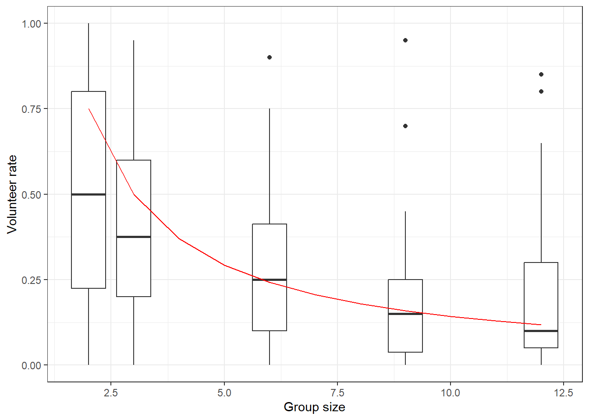

18 Application: Quantal Response Equilibrium and the Volunteer’s Dilemma (Goeree, Holt, and Smith 2017)
With what we have learned in the previous chapter about computing a quantal response equilibrium, we can now go and estimate one! Mechanically, this will just mean translating the R code I had in the previous chapter into Stan, and then combining the log probabilities that we get out of the predictor-corrector algorithm with choice frequencies to get our likelihood. As always, we will also need to have a good think about priors. This is especially important in this case, where the model is highly non-linear, and it may not be too easy to interpret the choice precision parameter without some carefully thought-out context.
| At least one other player volunteers | Nobody else volunteers | |
|---|---|---|
| Volunteer | V-c | V-c |
| Don’t volunteer | V | L |
For this chapter, I will show you my Bayesian take on the quantal response equilibrium analysis in Goeree, Holt, and Smith (2017), which studies the effect of group size in a Volunteer’s Dilemma. The game is described in Table 18.1. Importantly, note that this is not a payoff matrix: instead of a second player’s actions being the columns of the table, these columns refer to a summary of one’s opponents’ actions. In the Volunteer’s dilemma, there is a task that the \(n\) players can either volunteer (\(V\)) for at cost \(c\), or not volunteer (\(N\)) for at no cost. If at least one player volunteers, then all players get a large benefit \(V\), and if nobody volunteers all players get a smaller payoff \(L\). While there are many pure strategy Nash equilibria of this game that involve exactly one player volunteering and all other not volunteering, it is natural here to focus on the symmetric mixed-strategy Nash equilibrium, where players all volunteer with probability:
\[ \sigma_V^*=1-\left(\frac{c}{V-L}\right)^{\frac{1}{n-1}} \]
Goeree, Holt, and Smith (2017) hold constant \(V=1\) and \(L=c=0.2\), and vary the group size \(n\). The data from their main treatments, along with the Nash equilibrium prediction is shown in Figure 18.1
D<-read.csv("Data/GHS2017VD.csv") |>
mutate(GroupSize = str_count(Other.Id., "ID")+1,
GroupSize = ifelse(SessionID==10,9,GroupSize),
GroupSize = ifelse(SessionID==11,12,GroupSize)
) |>
rename(Volunteer = Decision..1.vol..) |>
mutate(ID = paste0(SessionID,"-",ID) |> as.factor() |> as.numeric() ) |>
dplyr::select(ID,GroupSize,Volunteer) |>
# all I need are the counts of actions for each participant:
group_by(ID,GroupSize) |>
summarize(Volunteer = sum(Volunteer),count=n())V<-1
L<-0.2
c<-0.2
Nash<-tibble(
GroupSize = 2:12,
) |>
mutate(Nash = 1-(c/(V-L))^(1/(GroupSize-1)))
(
ggplot()
+stat_boxplot(data=D,aes(x=GroupSize,y=Volunteer/20,group=GroupSize))
+geom_line(data=Nash,aes(GroupSize,y=Nash),color="red")
+theme_bw()
+xlab("Group size")
+ylab("Volunteer rate")
)
Figure 18.1: Nash prediction (red line) and participant-specific volunteer rates (black box plots)
18.1 Solving logit QRE and estimating the model
From the previous chapter, the system of equations that we are trying to solve is:
\[ \begin{aligned} H(\lambda,\rho) &=\begin{pmatrix} \rho_V - \rho_N -\lambda(V-c-V(1-\exp((n-1)\rho_N))-L\exp((n-1)\rho_N)))\\ \exp(\rho_V)+\exp(\rho_N)-1 \end{pmatrix}\\ \frac{\partial H(\lambda,\rho)}{\partial \rho^\top} &=\begin{bmatrix} 1 & -1-\lambda(n-1)\exp((n-1)\rho_N)\left(V-L\right)\\ 1 & 1 \end{bmatrix} \\ \frac{\partial H(\rho,\lambda)}{\partial \lambda} &=\begin{pmatrix} -(V-c-V(1-\exp((n-1)\rho_N))-L\exp((n-1)\rho_N)))\\ 0 \end{pmatrix} \end{aligned} \]
Below you can see my Stan program that implements the predictor-corrector algorithm in the functions block. One issue I came across was that the algorithm as it is written in the previous chapter stops when \(\lambda^t>\lambda\), where \(\lambda\) is the choice precision for which we want to compute the equilibrium. This is a problem for estimation, because we need the quantal response equilibrium probabilities at \(\lambda\) exactly, not for some \(\lambda^t>\lambda\) (but nevertheless somewhat “close” to \(\lambda\)). To fix this, I add in some constant-\(\lambda\) corrector steps at the end of the algorithm to backtrack to the desired probabilities. These steps use Newton’s method to find solution \(\rho\) to \(H(\lambda,\rho)=0\):91
\[ \rho^{t+1}=\rho^t-\left[\frac{\partial H(\lambda,\rho^t)}{\partial \rho^\top}\right]^{-1}H(\lambda,\rho^t) \]
For quantal response equilibrium models, it is especially important to translate the choice precision parameter \(\lambda\) into something easier to interpret. Following Goeree, Holt, and Smith (2017), I therefore also compute the implied probabilities of volunteering in the generated quantities block.
/* Homogeneous quantal response equilibrium model for the Volunteer's Dilemma
*/
functions {
vector Hfun(vector x,
data real n, data real V, data real c, data real L) {
return [x[1]-x[2]-x[3]*(V-c-V*(1-exp((n-1.0)*x[2]))-L*exp((n-1.0)*x[2])),
exp(x[1])+exp(x[2])-1.0]';
}
matrix jac(vector x,
data real n, data real V, data real c, data real L) {
return [
[1, -1-x[3]*(n-1.0)*exp((n-1.0)*x[2])*(V-L), -(V-c-V*(1-exp((n-1.0)*x[2]))-L*exp((n-1.0)*x[2]))],
[1, 1, 0]
];
}
vector lpQRE(
real lambda,
data real n,// Group size
data real V, data real c, data real L,
data real first_step,
data real min_step,
data real max_decel,
data int maxiter,
data real tol
) {
real max_dist = 0.4;
real max_contr = 0.6;
real eta = 0.1;
vector[3] x = [log(0.5),log(0.5),0]';
vector[3] t = qr_Q(jac(x,n,V,c,L)')[,3];
real h = first_step;
real omega = t[3]>=0 ? 1.0 : -1.0;
// Here we are just going from 0 to lambda
while (x[3]<=lambda) {
int accept = 1;
if (abs(h)<=min_step) {
// step size below minimum step
print("Step size",h,"less than minimum");
break;
}
// predictor step
vector[3] u = x+h*omega*t;
matrix[3,3] q = qr_Q(jac(u,n,V,c,L)');
real disto = 0;
real decel = 1.0/max_decel;
for (it in 1:maxiter) {
vector[2] dx = -generalized_inverse(jac(u,n,V,c,L))*Hfun(x,n,V,c,L);
real dist = sqrt(dx'*dx);
if (dist >= max_dist) {
print("Proposed distance ",dist," exceeds max_dist ",max_dist);
accept = 0;
break;
}
decel = fmax(decel,sqrt(dist/max_dist)*max_decel);
if (it>1) {
real contr = dist/(disto+tol*eta);
if (contr>max_contr) {
print("Maximum control rate exceeded");
accept=0;
break;
}
decel = fmax(decel,sqrt(contr/max_contr)*max_decel);
}
if (dist>tol) {
// success! The corrector step has corrected enough
break;
}
disto=dist;
/* if we have got to this point, then:
1. The Newton step has not proposed a too-large change
2. The contraction rate has not been exceeded
3. The proposed Newton step is not so small that we have effectively
found a solution
Therefore, we update u
*/
u = u+dx;
if (it==maxiter) {
// we have run out of iterations. Terminate
print("Maximum number of iterations ",maxiter," reached");
}
} // END OF CORRECTOR STEP
if (accept!=1) {
h = h/max_decel;
}
h = abs(h/fmin(decel,max_decel));
if ((t'*q[,3])<0) {
omega = -omega;
}
x = u;
t = q[,3];
}
/* Some constant-lambda corrector steps to get the QRE back from
over-shooting a bit
*/
for (ii in 1:maxiter) {
x[3] = lambda;
vector[2] dx = -jac(x,n,V,c,L)[,1:2]\Hfun(x,n,V,c,L);
x[1:2] +=dx;
if (sqrt(dx'*dx)<tol) {
break;
}
}
return x[1:2];
}
/* Returns the log-QRE probabilities
*/
vector lpQREcorrectorOnly(
real lambda,
data int GroupSize,
data real V, data real c, data real L,
data real tol
) {
// initial conditions
vector[2] x = rep_vector(log(0.5),2);
real dist = 1e12;
while (dist>tol) {
//for (kk in 1:10) {
vector[2] H = [x[1]-x[2]-lambda*(V-c-V*(1.0-exp((GroupSize-1.0)*x[2]))-L*exp((GroupSize-1.0)*x[2])),
exp(x[1])+exp(x[2])-1.0
]';
matrix[2,2] Hrho =
[
[1.0, -1.0-lambda*(GroupSize-1.0)*exp((GroupSize-1.0)*exp(x[2]))*(V-L)],
[1.0, 1.0]
];
vector[2] dx = -Hrho\H;
x = x+dx;
dist = sqrt(dx'*dx);
}
return x;
}
}
data {
int<lower=0> N; // Number of participants
int<lower=0> Volunteer[N];
int<lower=0> count[N];
int<lower=2> GroupSize[N];
// Game parameters
real V; // Benefit of volunteering
real c; // Cost of volunteering
real L; // Benefit if nobody volunteers
real prior_lambda[2]; // lognormal prior
real<lower=0> first_step;
real<lower=0> min_step;
real<lower=0> max_decel;
int<lower=0> maxiter;
real<lower=0> tol; // tolerance for the corrector step
}
parameters {
// logit choice precision
real<lower=0> lambda;
}
model {
for (ii in 1:N) {
vector[2] lp = lpQRE(
lambda,
GroupSize[ii],// Group size
V, c, L,
first_step,
min_step,
max_decel,
maxiter,
tol
);
target+=Volunteer[ii]*lp[1]+(count[ii]-Volunteer[ii])*lp[2];
}
lambda ~ lognormal(prior_lambda[1],prior_lambda[2]);
}
generated quantities {
vector[N] pV;
for (ii in 1:N) {
vector[2] lp = lpQRE(
lambda,
GroupSize[ii],// Group size
V, c, L,
first_step,
min_step,
max_decel,
maxiter,
tol
);
pV[ii] = exp(lp[1]);
}
}As you can see in the model block, I have chosen to use a log-normal prior for \(\lambda\). This ensures that it is positive. In this case, the prior I initially used:
\[ \log\lambda\sim N(\log(10),0.25^2) \]
produced results that were almost identical to the maximum likelihood estimates of Goeree, Holt, and Smith (2017). However I was worried about the prior median being 10, which is almost exactly the maximum likelihood estimate for \(\lambda\). In particular, I wanted to show that a prior not centered on the maximum likelihood estimate would also generate similar results. Therefore, I re-estimated the model with:
\[ \log\lambda\sim N(\log(5),1^2) \] which halves the prior median for \(\lambda\). As you will see below, this barely changes the results: the posterior distribution must be dominated by the likelihood contribution. For perspective, a 95% prior Bayesian credible region for \(\lambda\) is:
\[ \left[\exp(\log 5-1.96),\ \exp(\log 5 + 1.96)\right]\approx \left[0.70,\ 35.5\right] \]
Without further ado, we can now look at the posterior estimates, which are shown in Table 18.2.
FitSum<-summary(readRDS("Code/QRE2/Estimates_VDQREhomogeneous.rds"))$summary |>
data.frame()
TAB <- FitSum |>
dplyr::select(mean,sd)
rownames(TAB)<-c("$\\lambda$","n = 2","n = 3","n = 6","n = 9","n = 12","lp__")
TAB |> round(4) |> kbl(caption="Posterior moments of the homogeneous model. $\\lambda$ is logit choice precision. Rows with $n$ show predictions for the probability of volunteering for each group size") |> kable_classic(full_width=F)| mean | sd | |
|---|---|---|
| \(\lambda\) | 11.1159 | 1.1923 |
| n = 2 | 0.6699 | 0.0056 |
| n = 3 | 0.5000 | 0.0000 |
| n = 6 | 0.3084 | 0.0057 |
| n = 9 | 0.2358 | 0.0076 |
| n = 12 | 0.1967 | 0.0086 |
| lp__ | -2393.1565 | 0.7535 |
Comparing this Table to Table 3 of Goeree, Holt, and Smith (2017), the results are remarkably similar. I estimate a posterior mean \(\lambda\approx11.1\), whereas their MLE estimate is \(\lambda=11.0\). Furthermore, all predicted probabilities of the Bayesian model are accurate to the two decimal places of their counterparts in Goeree, Holt, and Smith (2017). Probably the most notable difference between my Table 18.2 and their Table 3 is that I also have an expression of uncertainty for the predicted probabilities. This is something that is done by default in Stan. For the maximum likelihood implementation, one would either have to use the delta method or bootstrap to get standard errors on these quantities.92
18.2 Adding some heterogeneity
The homogeneous quantal response equilibrium estimated above captures an important feature of the data: volunteer rates are on average pulled toward 50% compared to the mixed-strategy Nash prediction. However Goeree, Holt, and Smith (2017) also note that the sample variance of participant-specific volunteer rates is substantially greater than the homogeneous quantal response equilibrium predicts (see their Table 4). This suggests that there could be some participant-specific heterogeneity, and Goeree, Holt, and Smith (2017) explore this with two extensions to the homogeneous model: warm glow volunteering, and duplicate aversion. In this section I will show you how to compute the equilibrium for these models, and then estimate them. This will mean modifying the predictor-corrector algorithm, as well as using some Monte Carlo integration. In both situations this will mean solving for the average volunteer rate, which I will denote \(\bar\sigma_V\), and then augmenting the data appropriately to account for the individual-level heterogeneity.
As the steps I use to compute the equilibrium are almost identical for each of these extensions, I will first outline how this is done in general. I will then introduce the two models.
18.2.1 Computing quantal response equilibrium with heterogeneous parameters
In both of the model extensions, a participant-specific payoff parameter is added to the model. Here I will denote it as \(\theta_i\). We then specify a distribution for \(\theta_i\). Here I will use:93
\[ \theta_i\sim \mathrm{Truncated \ Normal}(\mu,\tau^2,(\mu-\tau, \mu+\tau)) \]
This is slightly different to the implementation in Goeree, Holt, and Smith (2017), who assume a discrete truncated normal distribution. Specifically, they assume that \(\theta_i\) is evenly spaced along a grid:94
\[ \theta_i\in\{\mu-\tau,\mu-0.8\tau, \mu-0.6\tau,\ldots,\mu,\ldots,\mu+\tau\} \]
My departure from the original specification, though, will permit us to use data augmentation to estimate the model.
Since \(\theta_i\) is participant-specific, we therefore have a participant-specific probabilistic best response function, which I shall denote \(\sigma(\lambda,\theta_i,\bar\sigma_V)\). \(\bar\sigma_V\) is the aggregate volunteer rate in the population. We can therefore find it by taking the expectation over \(\theta_i\):
\[ \bar\sigma_V = E_\theta[\sigma(\lambda,\theta,\bar\sigma_V)] \]
Note that on the left-hand side we have the average equilibrium volunteer rate, and on the left-hand side we have the average probabilistic best response. This is the equilibrium condition, as in equilibrium both of these quantities must be equal.
We have two computational issues that we will need to tackle in order to solve this equation. These are computing the expectation, and then solving the equation. For the former, I approximate the expectation using Monte Carlo integration as follows:
\[ \begin{aligned} E_\theta[\sigma(\lambda,\theta,\bar\sigma_V)]&\approx\frac1S\sum_{s=1}^S\sigma(\lambda,\theta_s,\bar\sigma_V)\\ \theta_s&\sim \mathrm{Truncated\ Normal}(\mu,\tau^2,(\mu-\tau,\mu+\tau)) \end{aligned} \]
I then need an algorithm that can solve the (approximate) equilibrium condition. For this, I will use constant-\(\lambda\) corrector steps, which are basically just solving the problem using Newton’s method. First, in order to solve the problem on the real number line, rather than on the unit interval, I will make the logit transformation \(\ell = \log(\bar\sigma_V)-\log(1-\bar\sigma_V)\). I can then re-write the equilibrium condition as:
\[ \begin{aligned} H(\ell)&=\ell-\log(E_\theta(\sigma(\lambda,\theta,\Lambda(\ell))))+\log(1-E_\theta(\sigma(\lambda,\theta,\Lambda(\ell)))) \end{aligned} \]
where \(\Lambda(x)=(1+\exp(-x))^{-1}\) is the inverse logit function. We can therefore iterate on the following sequence until we reach the desired level of accuracy:
\[ \ell^{t+1}=\ell^t-\frac{H(\ell^t)}{H'(\ell^t)} \]
where:
\[ \begin{aligned} H'(\ell)&=1-\left[\frac{1}{E_\theta(\sigma(\lambda,\theta,\Lambda(\ell)))}-\frac{1}{1-E_\theta(\sigma(\lambda,\theta,\Lambda(\ell)))}\right]E\left[\frac{\partial \sigma(\lambda,\theta,\Lambda(\ell))}{\partial \Lambda(\ell)}\right]\frac{\partial \Lambda(\ell)}{\partial \ell} \\ &=1-\frac{\Lambda(\ell)(1-\Lambda(\ell))}{E_\theta(\sigma(\lambda,\theta,\Lambda(\ell)))(1-E_\theta(\sigma(\lambda,\theta,\Lambda(\ell))))}E\left[\frac{\partial \sigma(\lambda,\theta,\Lambda(\ell))}{\partial \Lambda(\ell)}\right] \end{aligned} \]
Note that we will also have to approximate \(E\left[\frac{\partial \sigma(\lambda,\theta,\Lambda(\ell))}{\partial \Lambda(\ell)}\right]\) using Monte Carlo integration.
18.2.2 Warm glow volunteering
The first extension is to introduce a participant-specific parameter \(\delta_i\) that measures their “warm glow” utility from volunteering. That is, instead of receiving payoff \(V-c\) when they volunteer, they receive payoff \(V-c+\delta_i\). We can therefore write participant \(i\)’s probabilistic best response to the average volunteer rate \(\bar\sigma_V\) as:
\[ \begin{aligned} \sigma(\lambda,\delta_i,\bar\sigma_V) &=\frac{\exp(\lambda(V-c+\delta_i))}{\exp(\lambda(V-c+\delta_i))+\exp(\lambda(V(1-(1-\bar\sigma_V)^{n-1})+L(1-\bar\sigma_V)^{n-1}))}\\ &=\Lambda\left(\lambda\left(V-c+\delta_i-V(1-(1-\bar\sigma_V)^{n-1})-L(1-\bar\sigma_V)^{n-1}\right)\right) \end{aligned} \]
The derivative of the probabilistic best response that we need to evaluate is:95
\[ \begin{aligned} \frac{\partial \sigma(\lambda,\delta_i,\bar\sigma_V)}{\partial \bar\sigma_V} &=-\lambda(n-1)(1-\bar\sigma_V)^{n-2}(V-L)\sigma(\lambda,\delta_i,\bar\sigma_V)(1-\sigma(\lambda,\delta_i,\bar\sigma_V)) \end{aligned} \]
Here is the Stan program I wrote to estimate the warm glow model:
/* Warm glow quantal response equilibrium model for the Volunteer's Dilemma
*/
functions {
/* Here I am using "PBR" (i.e. probabilistic best response) to
distinguish between \sigma and \bar\sigma_V
*/
vector PBR(
real lambda, vector delta, real sigmaV,
data real V, data real c, data real L, data real n
) {
return inv_logit(lambda*(
V-c+delta-V*(1.0-pow(1.0-sigmaV,n-1.0))+L*pow(1.0-sigmaV,n-1.0)
));
}
// derivative wrt sigmaV
vector PBR_sigmaV(
real lambda, vector delta, real sigmaV,
data real V, data real c, data real L, data real n
) {
return -lambda*(V-L)*(n-1.0).*pow(1.0-sigmaV,n-2.0)
*PBR(lambda,delta,sigmaV,V,c,L,n) .*(1.0-PBR(lambda,delta,sigmaV,V,c,L,n));
}
// Zero condition for equilibrium
real Hfun(real l,
real lambda, vector delta,
data real V, data real c, data real L, data real n
) {
real sigmaV = inv_logit(l);
real meanPBR = mean(PBR(lambda,delta,sigmaV,V,c,L,n));
return l - log(meanPBR)+log(1.0-meanPBR);
}
// derivative of zero condition
real Hl(real l,
real lambda, vector delta,
data real V, data real c, data real L, data real n
) {
real sigmaV = inv_logit(l);
real meanPBR = mean(PBR(lambda,delta,sigmaV,V,c,L,n));
return 1.0-sigmaV*(1.0-sigmaV)/(meanPBR*(1.0-meanPBR))*mean(PBR_sigmaV(lambda,delta,sigmaV,V,c,L,n));
}
// Compute QRE using constant-lambda corrector steps
real lpQRE(
real lambda, vector delta,
data real V, data real c, data real L, data real n,
data real tol, data int maxiter
) {
// start at l=0 (sigmaV=0.5)
real l = 0.0;
for (it in 1:maxiter) {
real dl = -Hfun(l,lambda,delta,V,c,L,n)/Hl(l,lambda,delta,V,c,L,n);
l = l+dl;
if (abs(dl)<tol) {
break;
}
if (it==maxiter) {
print("Maximum iterations error, lambda = ",lambda, ", dl = ",abs(dl));
}
}
return inv_logit(l);
}
}
data {
int<lower=0> N; // Number of participants
int<lower=0> Volunteer[N];
int<lower=0> count[N];
int<lower=0> nTreatments;
vector[nTreatments] GroupSize;
int<lower=0> GameID[N];
// Game parameters
real V; // Benefit of volunteering
real c; // Cost of volunteering
real L; // Benefit if nobody volunteers
real prior_lambda[2]; // lognormal prior
real prior_mu[2];
real prior_tau;
int<lower=0> maxiter;
real<lower=0> tol; // tolerance for the corrector step
int<lower=1> nSim; // simulation size for Monte Carlo integration
vector<lower=-1.0,upper=1.0>[nSim] deltaZ; // standard normals truncated to be between -1 and 1
}
parameters {
// logit choice precision
real<lower=0> lambda;
// Distribution of delta
real mu;
real<lower=0> tau;
vector<lower = mu-tau,upper=mu+tau>[N] delta_i;
}
model {
vector[nSim] deltaSim = mu+tau*deltaZ;
vector[nTreatments] sigmaV;
for (tt in 1:nTreatments) {
sigmaV[tt] = lpQRE(
lambda,deltaSim,
V,c,L,GroupSize[tt],
tol,maxiter
);
}
Volunteer ~ binomial_logit(count,lambda*(
V-c+delta_i-V*(1.0-pow(1.0-sigmaV[GameID],GroupSize[GameID]-1.0))+L*pow(1.0-sigmaV[GameID],GroupSize[GameID]-1.0)
));
delta_i ~ normal(mu,tau);
lambda ~ lognormal(prior_lambda[1],prior_lambda[2]);
mu ~ normal(prior_mu[1],prior_mu[2]);
tau ~ cauchy(0,prior_tau);
}
generated quantities {
vector[nTreatments] sigmaV;
{
vector[nSim] deltaSim = mu+tau*deltaZ;
for (tt in 1:nTreatments) {
sigmaV[tt] = lpQRE(
lambda,deltaSim,
V,c,L,GroupSize[tt],
tol,maxiter
);
}
}
}18.2.3 Duplicate aversion
Goeree, Holt, and Smith (2017) also extend the homogeneous quantal response equilibrium model to allow for participant-specific “duplicate aversion”. That is, participants suffer disutility \(\gamma_i\) if more than one person volunteers. This modifies the expected payoff of volunteering from \(V-c\) to \(V-c-\gamma_i(1-(1-\bar\sigma_V)^{n-1})\), and so the probabilistic best response function for a participant with duplicate aversion \(\gamma_i\) is:
\[ \begin{aligned} \sigma(\lambda,\gamma_i,\bar\sigma_V)&=\Lambda\left(\lambda\left( V-c-\gamma_i(1-(1-\bar\sigma_V)^{n-1})-V(1-(1-\bar\sigma_V)^{n-1}) -L(1-\bar\sigma_V)^{n-1} \right)\right) \end{aligned} \]
and the derivative we need to evaluate is:
\[ \begin{aligned} \frac{\partial \sigma(\lambda,\gamma_i,\bar\sigma_V)}{\partial \bar\sigma_V} &=-\lambda(n-1)(1-\bar\sigma_V)^{n-2}\left(\gamma_i+V-L\right) \sigma(\lambda,\gamma_i,\bar\sigma_V)(1-\sigma(\lambda,\gamma_i,\bar\sigma_V)) \end{aligned} \]
Here is the Stan program I wrote to estimate the duplicate aversion model:
/* Duplicate aversion quantal response equilibrium model for the Volunteer's Dilemma
*/
functions {
/* Here I am using "PBR" (i.e. probabilistic best response) to
distinguish between \sigma and \bar\sigma_V
*/
vector PBR(
real lambda, vector gamma, real sigmaV,
data real V, data real c, data real L, data real n
) {
return inv_logit(lambda*(
V-c-gamma*(1.0-pow(1.0-sigmaV,n-1.0))-V*(1.0-pow(1.0-sigmaV,n-1.0))+L*pow(1.0-sigmaV,n-1.0)
));
}
// derivative wrt sigmaV
vector PBR_sigmaV(
real lambda, vector gamma, real sigmaV,
data real V, data real c, data real L, data real n
) {
return -lambda*(n-1.0)*pow(1.0-sigmaV,n-2.0)*(gamma+V-L)
.*PBR(lambda,gamma,sigmaV,V,c,L,n) .*(1.0-PBR(lambda,gamma,sigmaV,V,c,L,n));
}
// Zero condition for equilibrium
real Hfun(real l,
real lambda, vector gamma,
data real V, data real c, data real L, data real n
) {
real sigmaV = inv_logit(l);
real meanPBR = mean(PBR(lambda,gamma,sigmaV,V,c,L,n));
return l - log(meanPBR)+log(1.0-meanPBR);
}
// derivative of zero condition
real Hl(real l,
real lambda, vector gamma,
data real V, data real c, data real L, data real n
) {
real sigmaV = inv_logit(l);
real meanPBR = mean(PBR(lambda,gamma,sigmaV,V,c,L,n));
return 1.0-sigmaV*(1.0-sigmaV)/(meanPBR*(1.0-meanPBR))*mean(PBR_sigmaV(lambda,gamma,sigmaV,V,c,L,n));
}
// Compute QRE using constant-lambda corrector steps
real lpQRE(
real lambda, vector gamma,
data real V, data real c, data real L, data real n,
data real tol, data int maxiter
) {
// start at l=0 (sigmaV=0.5)
real l = 0.0;
for (it in 1:maxiter) {
real dl = -Hfun(l,lambda,gamma,V,c,L,n)/Hl(l,lambda,gamma,V,c,L,n);
l = l+dl;
if (abs(dl)<tol) {
break;
}
if (it==maxiter) {
print("Maximum iterations error, lambda = ",lambda, ", dl = ",abs(dl));
}
}
return inv_logit(l);
}
}
data {
int<lower=0> N; // Number of participants
int<lower=0> Volunteer[N];
int<lower=0> count[N];
int<lower=0> nTreatments;
vector[nTreatments] GroupSize;
int<lower=0> GameID[N];
// Game parameters
real V; // Benefit of volunteering
real c; // Cost of volunteering
real L; // Benefit if nobody volunteers
real prior_lambda[2]; // lognormal prior
real prior_mu[2];
real prior_tau;
int<lower=0> maxiter;
real<lower=0> tol; // tolerance for the corrector step
int<lower=1> nSim; // simulation size for Monte Carlo integration
vector<lower=-1.0,upper=1.0>[nSim] deltaZ; // standard normals truncated to be between -1 and 1
}
parameters {
// logit choice precision
real<lower=0> lambda;
// Distribution of delta
real mu;
real<lower=0> tau;
vector<lower = mu-tau,upper=mu+tau>[N] gamma_i;
}
model {
vector[nSim] gammaSim = mu+tau*deltaZ;
vector[nTreatments] sigmaV;
for (tt in 1:nTreatments) {
sigmaV[tt] = lpQRE(
lambda,gammaSim,
V,c,L,GroupSize[tt],
tol,maxiter
);
}
Volunteer ~ binomial_logit(count,lambda*(
V-c-gamma_i.*(1.0-pow(1.0-sigmaV[GameID],GroupSize[GameID]-1.0))-V*(1.0-pow(1.0-sigmaV[GameID],GroupSize[GameID]-1.0))+L*pow(1.0-sigmaV[GameID],GroupSize[GameID]-1.0)
));
gamma_i ~ normal(mu,tau);
lambda ~ lognormal(prior_lambda[1],prior_lambda[2]);
mu ~ normal(prior_mu[1],prior_mu[2]);
tau ~ cauchy(0,prior_tau);
}
generated quantities {
vector[nTreatments] sigmaV;
{
vector[nSim] gammaSim = mu+tau*deltaZ;
for (tt in 1:nTreatments) {
sigmaV[tt] = lpQRE(
lambda,gammaSim,
V,c,L,GroupSize[tt],
tol,maxiter
);
}
}
}18.2.4 Results
RowNames<-c("$\\lambda$","$\\mu$","$\\tau$","n = 2", "n = 3", "n = 6","n = 9", "n = 12","lp__")
WarmGlow<-summary(readRDS("Code/QRE2/Estimates_VDQREwarmglow.rds"))$summary |>
data.frame() |>
round(4) |>
dplyr::select(mean,sd)
DuplicateAversion<-summary(readRDS("Code/QRE2/Estimates_VDQREduplicateAversion.rds"))$summary |>
data.frame() |>
round(4) |>
dplyr::select(mean,sd)
rownames(WarmGlow)<-RowNames
rownames(DuplicateAversion)<-RowNames
cbind(WarmGlow,DuplicateAversion) |> kbl(caption = "Posterior moments from the heterogeneous models. Rows with $n$ show predictions for the probability of volunteering for each group size") |> kable_classic(full_width=FALSE) |> add_header_above(c("","Warm Glow"=2,"Duplicate aversion"=2))|
Warm Glow
|
Duplicate aversion
|
|||
|---|---|---|---|---|
| mean | sd | mean | sd | |
| \(\lambda\) | 4.1356 | 1.1268 | 6.0312 | 1.5625 |
| \(\mu\) | -0.3643 | 0.0874 | 0.4723 | 0.1104 |
| \(\tau\) | 0.5456 | 0.3621 | 0.7411 | 0.1916 |
| n = 2 | 0.5236 | 0.0317 | 0.5619 | 0.0272 |
| n = 3 | 0.4098 | 0.0201 | 0.4099 | 0.0199 |
| n = 6 | 0.2814 | 0.0162 | 0.2552 | 0.0173 |
| n = 9 | 0.2315 | 0.0186 | 0.1987 | 0.0186 |
| n = 12 | 0.2048 | 0.0211 | 0.1683 | 0.0201 |
| lp__ | -2187.5674 | 254.7857 | -2049.4131 | 16.4658 |
Table 18.3 shows the posterior estimates of the two heterogeneous-participants quantal response equilibrium models. These can be compared to the middle two panels of Table 5 of Goeree, Holt, and Smith (2017). While the models’ fundamental parameters \(\lambda\), \(\mu\), and \(\tau\) are noticeably different, the predictions for \(\bar\sigma_V\) for each group size are in agreement to within a couple of percentage points.
18.3 R code to run estimations
library(kableExtra)
library(tidyverse)
library(mnorm)
library(rstan)
rstan_options(auto_write = TRUE)
options(mc.cores = parallel::detectCores())
rstan_options(threads_per_chain = 1)
D<-read.csv("Data/GHS2017VD.csv") |>
# This dataset does not explicitly store the group size
# I can infer it from the "Other.Id." variable, but
# this is not consistent with the experiment description
# in the "Procedures" section of the paper. Specifically,
# it looked like there were two GroupSize=7 session, when
# in reality there should have been one with 9, and one
# with 12. This fixes things
mutate(GroupSize = str_count(Other.Id., "ID")+1,
GroupSize = ifelse(SessionID==10,9,GroupSize),
GroupSize = ifelse(SessionID==11,12,GroupSize)
) |>
rename(Volunteer = Decision..1.vol..) |>
mutate(ID = paste0(SessionID,"-",ID) |> as.factor() |> as.numeric() ) |>
select(ID,GroupSize,Volunteer) |>
# all I need are the counts of actions for each participant:
group_by(ID,GroupSize) |>
summarize(Volunteer = sum(Volunteer),count=n())
######################################################
# Homogeneous model
######################################################
file<-"Code/QRE2/Estimates_VDQREhomogeneous.rds"
if (!file.exists(file)) {
model<-stan_model("Code/QRE2/VDQREhomogeneous.stan")
d<-D |>
group_by(GroupSize) |>
summarize(Volunteer = sum(Volunteer),
count = sum(count))
dStan<-list(
N=dim(d)[1],
Volunteer = d$Volunteer,
count = d$count,
GroupSize = d$GroupSize,
V = 1.0,
c = 0.2,
L = 0.2,
prior_lambda = c(log(5),1),
first_step = 0.1,
min_step = 1e-4,
max_decel = 1.1,
maxiter = 1000,
tol = 1e-4
)
Fit<-sampling(model,data=dStan,seed=42,chains=4,iter=2000
)
Fit |> saveRDS(file)
}
#############################################
# Warm glow volunteering heterogeneous model
#############################################
file<-"Code/QRE2/Estimates_VDQREwarmglow.rds"
if (!file.exists(file)) {
model<-stan_model("Code/QRE2/VDQREwarmglow.stan")
#stop()
D<-D |>
mutate(
GameID = ifelse(
GroupSize==2,1,ifelse(
GroupSize==3,2,ifelse(
GroupSize==6,3,ifelse(
GroupSize==9,4,5
)
)
)
)
)
dStan<-list(
N=dim(D)[1],
Volunteer = D$Volunteer,
count = D$count,
nTreatments = 5,
GroupSize = c(2,3,6,9,12),
GameID = D$GameID,
V = 1.0,
c = 0.2,
L = 0.2,
prior_lambda = c(log(5),1),
prior_mu = c(0,1),
prior_tau = 0.05,
maxiter = 1000,
tol = 1e-4,
nSim = 100,
# This gets me Halton draws, transformed to be from the
# standard normal, truncated to lie between -1 and 1
deltaZ = (pnorm(1)+halton(100)*(1-2*pnorm(1))) |> qnorm() |> as.vector()
)
Fit<-sampling(model,data=dStan,seed=42,chains=4,iter=2000,
control=list(adapt_delta = 0.8,max_treedepth=15),
pars = "delta_i",include=FALSE
)
Fit |> saveRDS(file)
}
#############################################
# Duplicate aversion heterogeneous model
#############################################
file<-"Code/QRE2/Estimates_VDQREduplicateaversion.rds"
if (!file.exists(file)) {
model<-stan_model("Code/QRE2/VDQREduplicateaversion.stan")
#stop()
D<-D |>
mutate(
GameID = ifelse(
GroupSize==2,1,ifelse(
GroupSize==3,2,ifelse(
GroupSize==6,3,ifelse(
GroupSize==9,4,5
)
)
)
)
)
dStan<-list(
N=dim(D)[1],
Volunteer = D$Volunteer,
count = D$count,
nTreatments = 5,
GroupSize = c(2,3,6,9,12),
GameID = D$GameID,
V = 1.0,
c = 0.2,
L = 0.2,
prior_lambda = c(log(5),1),
prior_mu = c(0,1),
prior_tau = 0.05,
maxiter = 1000,
tol = 1e-4,
nSim = 100,
# This gets me Halton draws, transformed to be from the
# standard normal, truncated to lie between -1 and 1
deltaZ = (pnorm(1)+halton(100)*(1-2*pnorm(1))) |> qnorm() |> as.vector()
)
Fit<-sampling(model,data=dStan,seed=42,chains=4,iter=2000,
control=list(adapt_delta = 0.8,max_treedepth=15),
pars = "gamma_i",include=FALSE
)
Fit |> saveRDS(file)
}References
For some games, these constant-\(\lambda\) corrector steps may be sufficient on their own to solve for the quantal response equilibrium. For example, in James R. Bland (2023a) I find that corrector steps starting at the centroid are just fine for computing equilibrium in some generalized matching pennies games. ↩︎
You can see some standard errors on predicted QRE probabilities in Holt, Sahu, and Smith (2022) using the delta method. See their Table 6 and footnote 10.↩︎
An earlier attempt at using the un-truncated version of the normal distribution resulted in a host of errors from Stan, mainly the
BFMI lowerror. I suspect that when using this distribution, the likelihood is having trouble with extreme values of \(\theta_i\) in the data augmentation part of the model. ↩︎This discretization is also used in Goeree, Holt, and Laury (2002).↩︎
Here I am using the following result for the derivative of the inverse logit function \(\Lambda'(x)=\Lambda(x)(1-\Lambda(x))\)↩︎